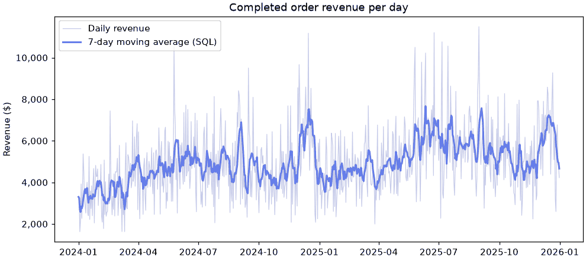

🪟 Lesson 5.3: SQL Window Functions
Rank within a group, compare each month with the last, keep a running total: window functions let every row see its neighbors without giving up its own place in the result.
🎯 Learning Objectives
By the end of this lesson, you will be able to:
- Explain what
OVER,PARTITION BYand the window'sORDER BYeach control, and how a window function differs fromGROUP BY - Number and rank rows with
ROW_NUMBER,RANKandDENSE_RANK, and select the top N rows of every group - Compare a row with earlier or later rows using
LAGandLEAD - Compute running totals and moving averages with an explicit window frame, and say what the default frame does
- Translate each of these between SQL and pandas (
transform,rank,shift,cumsumandexpanding,rollingwithmin_periods)
In This Lesson
👀 Keeping the Rows
GROUP BY answers "what is the average order at each store?" by collapsing 18,762 completed orders into five rows. But many questions need the summary and the detail together: "how does this order compare with its store's average?", "what was this month's revenue compared with last month's?", "which are the top two products in each category?". After GROUP BY the individual rows are gone.
A window function computes a value from a set of related rows, the window, and attaches it to each row, leaving every row in place.
💡 Mental Model: A Seat on the Train
GROUP BY is the conductor's report: "car 3 has 48 passengers". The passengers have become a number.
A window function leaves you in your seat and lets you look around. Through the window you can see the rest of your car (your partition), you know who sits in front of you and behind you (the order), and you can choose to look only at the two seats ahead (the frame). You get your answer, and you are still a passenger with a seat number.
You have done all of this in pandas: groupby(...).transform(...) from Lesson 2.4, and rank, shift, cumsum, expanding and rolling from Lesson 2.8, are window operations. This lesson gives you the SQL spelling, and each section ends with the pandas line that does the same thing, so you can move a calculation to whichever side holds the data.
Setup
This lesson only reads, so the connection is read-only, as in Lesson 5.2. Window functions need SQLite 3.25 or later; the Python you installed for this course bundles a much newer one, and the first block checks.
import sqlite3
import pandas as pd
pd.set_option("display.width", 150)
pd.set_option("display.max_columns", 20)
conn = sqlite3.connect("file:data/pinecrest.db?mode=ro", uri=True)
def show(sql, params=()):
"""Run a query and print the result as a table."""
print(pd.read_sql(sql, conn, params=params).to_string(index=False))
print(sqlite3.sqlite_version_info >= (3, 25, 0))Output
True🧱 OVER and PARTITION BY
Any aggregate function becomes a window function when you follow it with OVER (...). Inside the parentheses, PARTITION BY says which rows belong together. Here is each order next to the average for its own store.
show("""
SELECT order_id,
store,
order_total,
ROUND(AVG(order_total) OVER (PARTITION BY store), 1) AS store_avg,
ROUND(order_total - AVG(order_total) OVER (PARTITION BY store), 2) AS vs_store_avg
FROM orders
WHERE status = 'completed'
ORDER BY order_id
LIMIT 5
""")Output
order_id store order_total store_avg vs_store_avg
100001 Flagstaff 434.90 182.4 252.51
100002 Asheville 278.90 175.1 103.80
100003 Online 75.90 203.2 -127.30
100004 Online 399.80 203.2 196.60
100005 Online 26.71 203.2 -176.49Five orders in, five rows out, each carrying a number computed from thousands of other rows. Compare the two ways of asking for a store average:
GROUP BY store | OVER (PARTITION BY store) | |
|---|---|---|
| Rows returned | One per store (5) | One per order (18,762) |
| Other columns | Only grouped or aggregated ones | Any column of the row |
| pandas | groupby("store")["order_total"].mean() | groupby("store")["order_total"].transform("mean") |
An empty OVER () means one window containing every row, which gives you a grand total on each row, and with it a share of the whole. Window functions run after GROUP BY, so they can work on grouped results too: here SUM(revenue) OVER () adds up the five store totals.
show("""
WITH by_store AS (
SELECT store, ROUND(SUM(order_total), 2) AS revenue
FROM orders
WHERE status = 'completed'
GROUP BY store
)
SELECT store,
revenue,
ROUND(SUM(revenue) OVER (), 2) AS all_stores,
ROUND(100.0 * revenue / SUM(revenue) OVER (), 1) AS pct_of_total
FROM by_store
ORDER BY revenue DESC
""")Output
store revenue all_stores pct_of_total
Online 2357984.45 3624306.27 65.1
Boise 443386.85 3624306.27 12.2
Flagstaff 300580.35 3624306.27 8.3
Bend 284575.25 3624306.27 7.9
Asheville 237779.37 3624306.27 6.6The pandas Way
completed = pd.read_sql("SELECT order_id, store, order_total FROM orders WHERE status = 'completed' ORDER BY order_id", conn)
completed["store_avg"] = completed.groupby("store")["order_total"].transform("mean").round(1)
completed["vs_store_avg"] = (completed["order_total"] - completed.groupby("store")["order_total"].transform("mean")).round(2)
print(completed.head(5).to_string(index=False))Output
order_id store order_total store_avg vs_store_avg
100001 Flagstaff 434.90 182.4 252.51
100002 Asheville 278.90 175.1 103.80
100003 Online 75.90 203.2 -127.30
100004 Online 399.80 203.2 196.60
100005 Online 26.71 203.2 -176.49🏅 Ranking: ROW_NUMBER, RANK, DENSE_RANK
Some window functions exist only as window functions. The ranking family needs to know the order of rows within the window, which you give with an ORDER BY inside the OVER. This is separate from the query's final ORDER BY: one decides how rows are numbered, the other how they are displayed.
The three ranking functions differ only in how they treat ties. The two cheapest items in the Tents category happen to share a price, which makes the difference visible. (The display is sorted by price, then name.)
show("""
SELECT name,
price,
ROW_NUMBER() OVER (ORDER BY price) AS row_number,
RANK() OVER (ORDER BY price) AS rank,
DENSE_RANK() OVER (ORDER BY price) AS dense_rank
FROM products
WHERE category = 'Tents'
ORDER BY price, name
LIMIT 5
""")Output
name price row_number rank dense_rank
Cedar Notch Cairn Tent Footprint 41.95 2 1 1
Quillback Foothill Tent Footprint 41.95 1 1 1
Quillback Alpenglow Tent Footprint 67.95 3 3 2
Pinecrest Drift Tarp 94.95 4 4 3
Quillback Talus Tarp 119.95 5 5 4| Function | Ties | After a tie | pandas rank(method=) |
|---|---|---|---|
ROW_NUMBER() | Different numbers (which row gets which is arbitrary unless the order breaks the tie) | 1, 2, 3, 4 | "first" |
RANK() | Same number | Skips: 1, 1, 3, 4 (like a race: two golds, no silver) | "min" |
DENSE_RANK() | Same number | No gap: 1, 1, 2, 3 | "dense" |
Look closely at the first two rows: ROW_NUMBER gave 1 to the Quillback footprint and 2 to the Cedar Notch one, although nothing in ORDER BY price puts either first. Among ties, its choice is arbitrary.
Add PARTITION BY and the numbering restarts in every group. Here is each employee's salary rank within their department, highest first, for two departments.
show("""
SELECT department,
first_name || ' ' || last_name AS employee,
salary,
DENSE_RANK() OVER (PARTITION BY department ORDER BY salary DESC) AS rank_in_dept
FROM employees
WHERE department IN ('E-commerce', 'Executive')
ORDER BY department, rank_in_dept
""")Output
department employee salary rank_in_dept
E-commerce Arjun Silva 139700 1
E-commerce Chidi Sen 96900 2
E-commerce Santiago Nakata 88700 3
E-commerce Isaac Nakata 85100 4
E-commerce Zane Pacheco 82800 5
E-commerce Hugo Volkov 59300 6
Executive Clara Soto 185000 1
Executive Zane Laine 88600 2The pandas Way
tents = pd.read_sql("SELECT name, price FROM products WHERE category = 'Tents' ORDER BY price, name", conn)
tents["row_number"] = tents["price"].rank(method="first").astype(int)
tents["rank"] = tents["price"].rank(method="min").astype(int)
tents["dense_rank"] = tents["price"].rank(method="dense").astype(int)
print(tents.head(5).to_string(index=False))Output
name price row_number rank dense_rank
Cedar Notch Cairn Tent Footprint 41.95 1 1 1
Quillback Foothill Tent Footprint 41.95 2 1 1
Quillback Alpenglow Tent Footprint 67.95 3 3 2
Pinecrest Drift Tarp 94.95 4 4 3
Quillback Talus Tarp 119.95 5 5 4rank and dense_rank agree with SQL. row_number does not, for the two tied footprints: pandas breaks a tie by position in the DataFrame, SQLite by whichever row it reached first. Neither is wrong, and that is the point. If the numbering matters, add a tiebreaker to the order (ORDER BY price, name) so there are no ties left to break. Within groups, pandas uses df.groupby("department")["salary"].rank(method="dense", ascending=False).
🥇 Top N per Group
"The two best-selling products in each category" is one of the most common requests an analyst gets, and ORDER BY ... LIMIT 2 cannot do it: that gives two rows in total, not two per category. The window-function recipe is always the same three steps:
- number the rows within each group with
ROW_NUMBER() OVER (PARTITION BY group ORDER BY measure DESC); - put that in a CTE;
- filter the CTE with
WHERE rn <= N.
Step 2 is not optional. Window functions are computed after WHERE, so a WHERE clause in the same query cannot see them (the Common Mistakes section shows the error). The CTE turns the row number into an ordinary column.
show("""
WITH product_revenue AS (
SELECT p.category,
p.name,
ROUND(SUM(i.quantity * i.unit_price), 2) AS revenue
FROM order_items AS i
JOIN orders AS o ON o.order_id = i.order_id
JOIN products AS p ON p.sku = i.sku
WHERE o.status = 'completed'
GROUP BY p.sku
),
ranked AS (
SELECT *,
ROW_NUMBER() OVER (PARTITION BY category ORDER BY revenue DESC) AS rn,
ROUND(100.0 * revenue / SUM(revenue) OVER (PARTITION BY category), 1) AS pct_of_category
FROM product_revenue
)
SELECT category, rn, name, revenue, pct_of_category
FROM ranked
WHERE rn <= 2
ORDER BY category, rn
LIMIT 8
""")Output
category rn name revenue pct_of_category
Accessories 1 Cedar Notch Sawtooth First-Aid Kit 148120.20 26.1
Accessories 2 Larkspur Ridge Mesa Multitool 47968.95 8.4
Apparel 1 Granite Fork Cascade Rain Jacket 104981.25 24.1
Apparel 2 Tallgrass Drift Rain Jacket 51019.70 11.7
Camp Kitchen 1 Quillback Timberline Insulated Mug 46581.65 12.7
Camp Kitchen 2 Granite Fork Meadow Water Bottle 28923.80 7.9
Climbing 1 Granite Fork Summit Quickdraw Set 60813.30 22.3
Climbing 2 Tallgrass Timberline Climbing Helmet 47281.50 17.3One first-aid kit brings in more than a quarter of all Accessories revenue. That kind of concentration is invisible in a category total and obvious once every product can see its category's sum.
💡 Which Ranking Function for Top N?
ROW_NUMBER returns exactly N rows per group, choosing arbitrarily among ties at the cutoff unless your ORDER BY has a tiebreaker. RANK returns everyone tied at the cutoff, so you may get more than N. Decide which the question wants. "The latest order per customer" wants ROW_NUMBER; "everyone with a top-three score" wants RANK or DENSE_RANK.
The pandas Way
product_revenue = pd.read_sql("""
SELECT p.category, p.name, ROUND(SUM(i.quantity * i.unit_price), 2) AS revenue
FROM order_items AS i
JOIN orders AS o ON o.order_id = i.order_id
JOIN products AS p ON p.sku = i.sku
WHERE o.status = 'completed'
GROUP BY p.sku
""", conn)
top2 = (product_revenue.sort_values(["category", "revenue"], ascending=[True, False])
.groupby("category").head(2))
print(top2.head(4).to_string(index=False))Output
category name revenue
Accessories Cedar Notch Sawtooth First-Aid Kit 148120.20
Accessories Larkspur Ridge Mesa Multitool 47968.95
Apparel Granite Fork Cascade Rain Jacket 104981.25
Apparel Tallgrass Drift Rain Jacket 51019.70↔️ LAG and LEAD: Looking at Neighbors
LAG(column) returns the value of that column from the previous row of the window, and LEAD(column) from the next row, in the order given by the window's ORDER BY. They are how you compute change over time. A second argument sets how far to look (LAG(revenue, 12) is twelve rows back).
Most of the remaining examples use completed revenue by month. Storing that CTE in a Python string avoids retyping it.
MONTHLY = """
WITH monthly AS (
SELECT strftime('%Y-%m', order_date) AS month,
ROUND(SUM(order_total), 2) AS revenue
FROM orders
WHERE status = 'completed'
GROUP BY month
)
"""
show(MONTHLY + """
SELECT month,
revenue,
LAG(revenue) OVER (ORDER BY month) AS prev_month,
LEAD(revenue) OVER (ORDER BY month) AS next_month,
ROUND(100.0 * (revenue - LAG(revenue) OVER (ORDER BY month))
/ LAG(revenue) OVER (ORDER BY month), 1) AS pct_change
FROM monthly
ORDER BY month
LIMIT 5
""")Output
month revenue prev_month next_month pct_change
2024-01 106287.63 NaN 104687.91 NaN
2024-02 104687.91 106287.63 128400.63 -1.5
2024-03 128400.63 104687.91 129716.87 22.7
2024-04 129716.87 128400.63 153467.52 1.0
2024-05 153467.52 129716.87 155470.82 18.3The first month has no previous row, so LAG returns NULL (pandas shows NaN), and the percentage that depends on it is NULL too. That is the honest answer: there is nothing to compare January 2024 with.
With PARTITION BY, "previous" means previous within the group. How long do customers wait between orders? julianday() turns a date into a day count, so subtracting two of them gives days.
show("""
WITH gaps AS (
SELECT customer_id,
order_date,
LAG(order_date) OVER (PARTITION BY customer_id ORDER BY order_date, order_id) AS prev_order_date
FROM orders
)
SELECT COUNT(*) AS orders,
COUNT(prev_order_date) AS with_an_earlier_order,
ROUND(AVG(julianday(order_date) - julianday(prev_order_date)), 1) AS avg_days_between
FROM gaps
""")Output
orders with_an_earlier_order avg_days_between
20302 16360 83.120,302 orders minus the 3,942 first orders (one per buyer, with nothing before them) leaves 16,360 gaps, averaging about 83 days. Note order_id in the window's ORDER BY: it breaks ties when a customer orders twice on one day, so the result is the same every time you run it.
The pandas Way
monthly = pd.read_sql(MONTHLY + "SELECT month, revenue FROM monthly ORDER BY month", conn)
monthly["prev_month"] = monthly["revenue"].shift(1)
monthly["next_month"] = monthly["revenue"].shift(-1)
monthly["pct_change"] = (monthly["revenue"].pct_change() * 100).round(1)
print(monthly.head(5).to_string(index=False))Output
month revenue prev_month next_month pct_change
2024-01 106287.63 NaN 104687.91 NaN
2024-02 104687.91 106287.63 128400.63 -1.5
2024-03 128400.63 104687.91 129716.87 22.7
2024-04 129716.87 128400.63 153467.52 1.0
2024-05 153467.52 129716.87 155470.82 18.3shift(1) is LAG, shift(-1) is LEAD, and within groups it is the sort, then groupby pattern from Lesson 2.8: df.sort_values(["customer_id", "order_date"]).groupby("customer_id")["order_date"].shift(1). One difference to remember: pandas shifts by position in the DataFrame, so you must sort first. SQL takes the order from the OVER clause.
📈 Running Totals
Give an aggregate window function an ORDER BY and it stops covering the whole partition. It covers the rows from the start of the partition up to the current row, which makes SUM a running total. Partition by year and the total restarts each January: year to date.
show(MONTHLY + """
SELECT month,
revenue,
ROUND(SUM(revenue) OVER (ORDER BY month), 2) AS running_total,
ROUND(SUM(revenue) OVER (PARTITION BY substr(month, 1, 4) ORDER BY month), 2) AS year_to_date
FROM monthly
ORDER BY month
LIMIT 14 OFFSET 10
""")Output
month revenue running_total year_to_date
2024-11 143304.56 1498118.16 1498118.16
2024-12 185181.35 1683299.51 1683299.51
2025-01 132423.89 1815723.40 132423.89
2025-02 126414.41 1942137.81 258838.30
2025-03 141063.78 2083201.59 399902.08
2025-04 143336.75 2226538.34 543238.83
2025-05 173646.91 2400185.25 716885.74
2025-06 194875.60 2595060.85 911761.34
2025-07 183355.56 2778416.41 1095116.90
2025-08 186671.93 2965088.34 1281788.83
2025-09 161164.51 3126252.85 1442953.34
2025-10 163161.56 3289414.41 1606114.90
2025-11 145655.13 3435069.54 1751770.03
2025-12 189236.73 3624306.27 1941006.76(LIMIT 14 OFFSET 10 skips the first ten rows, so you can see the turn of the year.) The running total keeps climbing to the two-year figure of $3,624,306.27, while year_to_date starts over at January 2025.
The pandas Way
A window that grows from the first row to the current one is what pandas calls an expanding window. cumsum() is the shortcut for an expanding sum, and grouping by year gives year to date, as in Lesson 2.8.
monthly["running_total"] = monthly["revenue"].cumsum().round(2)
monthly["year_to_date"] = monthly.groupby(monthly["month"].str[:4])["revenue"].cumsum().round(2)
print(monthly[["month", "revenue", "running_total", "year_to_date"]].iloc[10:14].to_string(index=False))Output
month revenue running_total year_to_date
2024-11 143304.56 1498118.16 1498118.16
2024-12 185181.35 1683299.51 1683299.51
2025-01 132423.89 1815723.40 132423.89
2025-02 126414.41 1942137.81 258838.30⚠️ The Default Frame Has a Surprise for Ties
"From the start up to the current row" is not quite what the default says. The default is "up to the current row and every row that ties with it in the window's order". With one row per month there are no ties and no surprise. With several orders on the same date there are, as the next section shows. The cure is to state the frame yourself.
🖼️ Frames and Moving Averages
The frame is the part of the partition a window function actually looks at for the current row. You set it after the window's ORDER BY:
ROWS BETWEEN <start> AND <end>where each end is one of UNBOUNDED PRECEDING (the first row of the partition), n PRECEDING, CURRENT ROW, n FOLLOWING, or UNBOUNDED FOLLOWING (the last row).
An average over that sliding frame is a three-month moving average, the standard way to see a trend through month-to-month noise.
show(MONTHLY + """
SELECT month,
revenue,
ROUND(AVG(revenue) OVER (ORDER BY month ROWS BETWEEN 2 PRECEDING AND CURRENT ROW), 2) AS moving_avg_3,
COUNT(*) OVER (ORDER BY month ROWS BETWEEN 2 PRECEDING AND CURRENT ROW) AS rows_in_frame
FROM monthly
ORDER BY month
LIMIT 5
""")Output
month revenue moving_avg_3 rows_in_frame
2024-01 106287.63 106287.63 1
2024-02 104687.91 105487.77 2
2024-03 128400.63 113125.39 3
2024-04 129716.87 120935.14 3
2024-05 153467.52 137195.01 3Look at rows_in_frame. January has no preceding rows, so its "three-month average" is an average of one month, and February's of two. SQL uses whatever part of the frame exists. pandas makes the opposite choice by default.
The pandas Way
monthly["rolling_default"] = monthly["revenue"].rolling(3).mean().round(2)
monthly["rolling_like_sql"] = monthly["revenue"].rolling(3, min_periods=1).mean().round(2)
print(monthly[["month", "revenue", "rolling_default", "rolling_like_sql"]].head(5).to_string(index=False))Output
month revenue rolling_default rolling_like_sql
2024-01 106287.63 NaN 106287.63
2024-02 104687.91 NaN 105487.77
2024-03 128400.63 113125.39 113125.39
2024-04 129716.87 120935.14 120935.14
2024-05 153467.52 137195.01 137195.01rolling(3) gives NaN until a full window of three exists; min_periods=1 reproduces SQL's behavior. Neither is wrong, but a report that mixes the two will disagree with itself in its first rows. If you want SQL to blank out the incomplete windows, wrap the average: CASE WHEN COUNT(*) OVER (...) = 3 THEN AVG(...) OVER (...) END.
A Frame That Stops Before the Current Row
Lesson 2.8 gave you a rule for features that must not see the value they will be compared with: shift(1) before the window, so that each row's average uses only earlier rows and nothing leaks in from the present. In SQL the same rule is a frame that ends at 1 PRECEDING instead of CURRENT ROW.
show(MONTHLY + """
SELECT month,
revenue,
ROUND(AVG(revenue) OVER (ORDER BY month ROWS BETWEEN 3 PRECEDING AND 1 PRECEDING), 2) AS prior_3_avg
FROM monthly
ORDER BY month
LIMIT 5
""")
monthly["prior_3_avg"] = monthly["revenue"].shift(1).rolling(3, min_periods=1).mean().round(2)
print(monthly[["month", "revenue", "prior_3_avg"]].head(5).to_string(index=False))Output
month revenue prior_3_avg
2024-01 106287.63 NaN
2024-02 104687.91 106287.63
2024-03 128400.63 105487.77
2024-04 129716.87 113125.39
2024-05 153467.52 120935.14
month revenue prior_3_avg
2024-01 106287.63 NaN
2024-02 104687.91 106287.63
2024-03 128400.63 105487.77
2024-04 129716.87 113125.39
2024-05 153467.52 120935.14The two tables agree. January has no earlier month, so its frame is empty and the result is NULL in SQL and NaN in pandas. April's value averages January to March and does not include April itself.
Seeing It: A Seven-Day Moving Average
Daily revenue is noisy because weekends sell more than weekdays. A seven-row frame always holds one of each weekday, so it cancels the weekly cycle. Let SQL do the calculation and pandas draw the result.
import matplotlib.pyplot as plt
daily = pd.read_sql("""
WITH daily AS (
SELECT order_date, SUM(order_total) AS revenue
FROM orders
WHERE status = 'completed'
GROUP BY order_date
)
SELECT order_date,
ROUND(revenue, 2) AS revenue,
ROUND(AVG(revenue) OVER (ORDER BY order_date ROWS BETWEEN 6 PRECEDING AND CURRENT ROW), 2) AS moving_avg_7
FROM daily
ORDER BY order_date
""", conn, parse_dates=["order_date"])
print(daily.tail(3).to_string(index=False))
fig, ax = plt.subplots(figsize=(9, 4), layout="constrained")
ax.plot(daily["order_date"], daily["revenue"], color="#c5cae9", linewidth=0.8, label="Daily revenue")
ax.plot(daily["order_date"], daily["moving_avg_7"], color="#667eea", linewidth=2, label="7-day moving average (SQL)")
ax.set_title("Completed order revenue per day")
ax.set_ylabel("Revenue ($)")
ax.yaxis.set_major_formatter("{x:,.0f}")
ax.legend()
plt.show()Output
order_date revenue moving_avg_7
2025-12-29 4909.25 4982.23
2025-12-30 4804.52 4941.95
2025-12-31 4226.03 4662.80
Why an Explicit Frame Is Safer for Running Totals
Here is the tie problem promised above. A running total of Bend's orders, ordered by date, written both ways:
show("""
SELECT order_id,
order_date,
order_total,
ROUND(SUM(order_total) OVER (ORDER BY order_date), 2) AS default_frame,
ROUND(SUM(order_total) OVER (ORDER BY order_date, order_id
ROWS BETWEEN UNBOUNDED PRECEDING AND CURRENT ROW), 2) AS explicit_rows
FROM orders
WHERE store = 'Bend' AND status = 'completed'
ORDER BY order_date, order_id
LIMIT 5
""")Output
order_id order_date order_total default_frame explicit_rows
100011 2024-01-01 43.90 687.14 43.90
100015 2024-01-01 241.97 687.14 285.87
100017 2024-01-01 401.27 687.14 687.14
100036 2024-01-02 211.80 898.94 898.94
100059 2024-01-04 102.51 1001.45 1001.45Three orders share January 1. With the default frame, all three rows show $687.14, the total including the other two, because rows that tie in the window's order are treated as arriving together. The explicit ROWS frame, with order_id as a tiebreaker, counts strictly row by row. (The default is RANGE BETWEEN UNBOUNDED PRECEDING AND CURRENT ROW; RANGE works on values, ROWS on positions.)
✅ A Simple Habit
Whenever a window has an ORDER BY and you are aggregating over it, write the frame out: ROWS BETWEEN ... AND .... It takes one more line, and the query then says exactly what it does. Ranking functions and LAG/LEAD ignore the frame, so they need none.
🧰 More Tools: NTILE, FIRST_VALUE, WINDOW
NTILE: Equal-Sized Buckets
NTILE(4) deals the ordered rows into four buckets of (nearly) equal size: quartiles. It is the SQL pd.qcut.
show("""
WITH bucketed AS (
SELECT order_total,
NTILE(4) OVER (ORDER BY order_total) AS quartile
FROM orders
WHERE status = 'completed'
)
SELECT quartile,
COUNT(*) AS orders,
MIN(order_total) AS smallest,
MAX(order_total) AS largest,
ROUND(SUM(order_total), 2) AS revenue
FROM bucketed
GROUP BY quartile
""")Output
quartile orders smallest largest revenue
1 4691 6.38 77.90 217711.70
2 4691 77.90 145.90 510261.45
3 4690 145.90 263.45 920964.94
4 4690 263.65 4893.00 1975368.18The top quarter of orders, those above about $265, brings in more than half of all revenue.
FIRST_VALUE and a Named WINDOW
FIRST_VALUE(column) returns the column from the first row of the frame. When several functions share one window definition, name it once in a WINDOW clause (after WHERE, GROUP BY and HAVING; before the final ORDER BY) and refer to it by name.
show(MONTHLY + """
SELECT month,
revenue,
RANK() OVER best_first AS rank_in_year,
FIRST_VALUE(month) OVER best_first AS best_month_of_year,
ROUND(100.0 * revenue / FIRST_VALUE(revenue) OVER best_first, 1) AS pct_of_best
FROM monthly
WINDOW best_first AS (PARTITION BY substr(month, 1, 4) ORDER BY revenue DESC)
ORDER BY month
LIMIT 4
""")Output
month revenue rank_in_year best_month_of_year pct_of_best
2024-01 106287.63 11 2024-12 57.4
2024-02 104687.91 12 2024-12 56.5
2024-03 128400.63 10 2024-12 69.3
2024-04 129716.87 8 2024-12 70.0| Need | SQL window function | pandas |
|---|---|---|
| Group value on every row | AVG(x) OVER (PARTITION BY g) | groupby("g")["x"].transform("mean") |
| Number or rank rows | ROW_NUMBER(), RANK(), DENSE_RANK() | rank(method="first" / "min" / "dense") |
| Previous or next row | LAG(x), LEAD(x) | shift(1), shift(-1) |
| Running total (an expanding window) | SUM(x) OVER (ORDER BY t ROWS BETWEEN UNBOUNDED PRECEDING AND CURRENT ROW) | cumsum() or expanding().sum() |
| Window of earlier rows only (no leakage) | AVG(x) OVER (ORDER BY t ROWS BETWEEN 3 PRECEDING AND 1 PRECEDING) | shift(1).rolling(3, min_periods=1).mean() |
| Moving average | AVG(x) OVER (ORDER BY t ROWS BETWEEN 6 PRECEDING AND CURRENT ROW) | rolling(7, min_periods=1).mean() |
| Equal-sized buckets | NTILE(4) | pd.qcut(x, 4) |
| Share of group | x / SUM(x) OVER (PARTITION BY g) | x / groupby("g")["x"].transform("sum") |
💡 Where Windows Fit in the Order of Evaluation
From Lesson 5.1: FROM, WHERE, GROUP BY, HAVING, SELECT, ORDER BY, LIMIT. Window functions are computed in the SELECT step, after grouping and before the final sort and LIMIT. Two consequences: a window sees only the rows that survived WHERE, and nothing in WHERE, GROUP BY or HAVING can refer to a window function. PostgreSQL follows the same rules, and every query in this lesson is standard SQL apart from strftime, substr on dates and julianday.
⚠️ Common Mistakes
The default-frame surprise with ties is the most important silent mistake, and you have seen it. Here are four more. If one of them catches you this week, you are in very good company.
1. Filtering on a Window Function in the Same Query
conn.execute("""
SELECT order_id, order_total
FROM orders
WHERE ROW_NUMBER() OVER (ORDER BY order_total DESC) <= 3
""")Error
OperationalError: misuse of window function ROW_NUMBER()Giving it a name in SELECT and using the name in WHERE does not help:
conn.execute("""
SELECT order_id, ROW_NUMBER() OVER (ORDER BY order_total DESC) AS rn
FROM orders
WHERE rn <= 3
""")Error
OperationalError: misuse of aliased window function rnWhat it means: WHERE runs before window functions exist. Fix: compute the window function in a CTE (or subquery), then filter in the outer query, as in Top N per Group.
2. Forgetting PARTITION BY with LAG
show("""
WITH store_month AS (
SELECT store, strftime('%Y-%m', order_date) AS month, ROUND(SUM(order_total), 2) AS revenue
FROM orders
WHERE status = 'completed' AND store IN ('Asheville', 'Bend')
GROUP BY store, month
)
SELECT store, month, revenue,
LAG(revenue) OVER (ORDER BY store, month) AS prev_wrong,
LAG(revenue) OVER (PARTITION BY store ORDER BY month) AS prev_right
FROM store_month
ORDER BY store, month
LIMIT 3 OFFSET 23
""")Output (the middle row is the problem)
store month revenue prev_wrong prev_right
Asheville 2025-12 8253.61 8067.69 8067.69
Bend 2024-01 7563.67 8253.61 NaN
Bend 2024-02 7726.66 7563.67 7563.67What happened: without a partition, Bend's first month was compared with Asheville's last. Any growth figure computed from prev_wrong on that row is nonsense, and it sits in the middle of an otherwise correct table. Fix: whenever the data holds several series (stores, customers, products), PARTITION BY the series.
3. LAST_VALUE Returns the Current Row
show(MONTHLY + """
SELECT month,
revenue,
LAST_VALUE(revenue) OVER (ORDER BY month) AS last_default,
LAST_VALUE(revenue) OVER (ORDER BY month
ROWS BETWEEN UNBOUNDED PRECEDING AND UNBOUNDED FOLLOWING) AS last_full_frame
FROM monthly
ORDER BY month
LIMIT 3
""")Output
month revenue last_default last_full_frame
2024-01 106287.63 106287.63 189236.73
2024-02 104687.91 104687.91 189236.73
2024-03 128400.63 128400.63 189236.73What happened: the default frame ends at the current row, so the "last" value in it is the row itself. Fix: extend the frame to UNBOUNDED FOLLOWING, or sort the window the other way and use FIRST_VALUE.
4. An Order That Does Not Decide
ROW_NUMBER() OVER (PARTITION BY customer_id ORDER BY order_date) looks fine until a customer has two orders on the same date. Then which one is number 1 is up to the engine, and it may change between runs or between databases. Fix: end the window's ORDER BY with a unique column, as the examples above do with order_id.
🛠️ Project: The Store Performance Table
Pinecrest's leadership reviews each sales channel monthly, and every month someone rebuilds the same spreadsheet by hand: revenue, change from last month, year to date, the trend, the ranking, and growth over the same month last year. You will produce the whole table with one query built in stages, then verify it with pandas. Work in a new notebook, lesson_5_3_project. Allow about 45 minutes.
🛠️ Step 1: The base table, one row per store and month (5 min)
Everything else is a window over this CTE. Check its shape first: 5 stores × 24 months should be 120 rows.
import sqlite3
import pandas as pd
pd.set_option("display.width", 150)
db = sqlite3.connect("file:data/pinecrest.db?mode=ro", uri=True)
BASE = """
WITH store_month AS (
SELECT store,
strftime('%Y-%m', order_date) AS month,
COUNT(*) AS orders,
ROUND(SUM(order_total), 2) AS revenue
FROM orders
WHERE status = 'completed'
GROUP BY store, month
)
"""
base = pd.read_sql(BASE + "SELECT * FROM store_month ORDER BY store, month", db)
print(base.shape)
print(base.head(3))Output
(120, 4)
store month orders revenue
0 Asheville 2024-01 40 7259.22
1 Asheville 2024-02 40 7339.92
2 Asheville 2024-03 61 9306.57🛠️ Step 2: Month-over-month change and year to date (10 min)
Both windows are partitioned by store. Year to date adds the year to the partition and states its frame.
step2 = pd.read_sql(BASE + """
SELECT store, month, revenue,
ROUND(100.0 * (revenue - LAG(revenue) OVER (PARTITION BY store ORDER BY month))
/ LAG(revenue) OVER (PARTITION BY store ORDER BY month), 1) AS mom_pct,
ROUND(SUM(revenue) OVER (PARTITION BY store, substr(month, 1, 4) ORDER BY month
ROWS BETWEEN UNBOUNDED PRECEDING AND CURRENT ROW), 2) AS ytd
FROM store_month
ORDER BY store, month
""", db)
print(step2[step2["store"] == "Boise"].iloc[10:14])Output
store month revenue mom_pct ytd
58 Boise 2024-11 20180.31 42.9 192401.84
59 Boise 2024-12 19738.28 -2.2 212140.12
60 Boise 2025-01 17900.35 -9.3 17900.35
61 Boise 2025-02 14093.95 -21.3 31994.30🛠️ Step 3: Add the trend, the rank and last year (15 min)
Three more columns, three different windows: a three-month moving average per store, the store's rank within each month (so the partition is the month), and the same month one year earlier with LAG(revenue, 12). Save the full query text: it is the deliverable.
PERFORMANCE_SQL = BASE + """
SELECT store, month, revenue,
ROUND(100.0 * (revenue - LAG(revenue) OVER by_store) / LAG(revenue) OVER by_store, 1) AS mom_pct,
ROUND(SUM(revenue) OVER (PARTITION BY store, substr(month, 1, 4) ORDER BY month
ROWS BETWEEN UNBOUNDED PRECEDING AND CURRENT ROW), 2) AS ytd,
ROUND(AVG(revenue) OVER (PARTITION BY store ORDER BY month
ROWS BETWEEN 2 PRECEDING AND CURRENT ROW), 2) AS moving_avg_3,
RANK() OVER (PARTITION BY month ORDER BY revenue DESC) AS rank_in_month,
ROUND(100.0 * (revenue - LAG(revenue, 12) OVER by_store)
/ LAG(revenue, 12) OVER by_store, 1) AS yoy_pct
FROM store_month
WINDOW by_store AS (PARTITION BY store ORDER BY month)
ORDER BY store, month
"""
perf = pd.read_sql(PERFORMANCE_SQL, db)
print(perf.shape)
print(perf[perf["month"] == "2025-12"].to_string(index=False))Output
(120, 8)
store month revenue mom_pct ytd moving_avg_3 rank_in_month yoy_pct
Asheville 2025-12 8253.61 2.3 110442.39 8400.13 5 -35.5
Bend 2025-12 14111.64 48.0 147586.07 12594.76 4 -0.8
Boise 2025-12 19243.89 11.1 231246.73 19058.06 2 -2.5
Flagstaff 2025-12 17472.88 42.6 171547.87 14722.46 3 33.7
Online 2025-12 130154.71 32.2 1280183.70 111242.40 1 3.8yoy_pct is empty for every 2024 month, because there is no row twelve months earlier. That is correct, not a bug.
🛠️ Step 4: Each store's best month (5 min)
Top 1 per group, with the recipe from the lesson: number, wrap, filter.
best = pd.read_sql(BASE + """
, ranked AS (
SELECT store, month, revenue,
ROW_NUMBER() OVER (PARTITION BY store ORDER BY revenue DESC, month) AS rn
FROM store_month
)
SELECT store, month AS best_month, revenue
FROM ranked
WHERE rn = 1
ORDER BY revenue DESC
""", db)
print(best)Output
store best_month revenue
0 Online 2025-12 130154.71
1 Boise 2025-07 28735.98
2 Flagstaff 2025-06 19760.91
3 Bend 2025-05 16162.40
4 Asheville 2025-05 13113.28A second CTE is added to BASE by starting the extra text with a comma. Not every store peaks in the same month.
🛠️ Step 5: Verify every window column with pandas (10 min)
Recompute the five window columns from base (which has no window functions in it) and compare. equals treats missing values in the same positions as equal.
check = base.sort_values(["store", "month"]).reset_index(drop=True)
by_store = check.groupby("store")["revenue"]
check["mom_pct"] = (by_store.pct_change() * 100).round(1)
check["ytd"] = check.groupby(["store", check["month"].str[:4]])["revenue"].cumsum().round(2)
check["moving_avg_3"] = by_store.transform(lambda s: s.rolling(3, min_periods=1).mean()).round(2)
check["rank_in_month"] = check.groupby("month")["revenue"].rank(method="min", ascending=False).astype(int)
check["yoy_pct"] = (by_store.pct_change(12) * 100).round(1)
for col in ["mom_pct", "ytd", "moving_avg_3", "rank_in_month", "yoy_pct"]:
print(f"{col:<14} matches SQL: {check[col].equals(perf[col])}")
db.close()Output
mom_pct matches SQL: True
ytd matches SQL: True
moving_avg_3 matches SQL: True
rank_in_month matches SQL: True
yoy_pct matches SQL: True✅ Project Completion Checklist
- The base CTE returns 120 rows: 5 stores × 24 months
mom_pctis empty for each store's first month and never compares one store with anotherytdrestarts in January 2025 for every storerank_in_monthruns from 1 to 5 within each monthyoy_pctis empty for all of 2024 and filled for all of 2025- All five window columns match the pandas recomputation
🏋️ Hands-on Exercises
Use the lesson's read-only conn, show() and the MONTHLY string. For each exercise, decide three things before you type: what is the partition, what is the order, and does it need a frame?
🏋️ Exercise 1: Pay Compared with the Team
For every employee in the Operations department, show name, title, salary, the department's average salary (rounded to whole dollars), and the difference between the two. Sort from the highest paid down.
💡 Hint
AVG(salary) OVER (PARTITION BY department). Because the WHERE keeps only one department, OVER () would give the same result here; the partition makes the query correct for any filter.
✅ Solution
show("""
SELECT first_name || ' ' || last_name AS employee,
title,
salary,
ROUND(AVG(salary) OVER (PARTITION BY department)) AS dept_avg,
ROUND(salary - AVG(salary) OVER (PARTITION BY department)) AS vs_avg
FROM employees
WHERE department = 'Operations'
ORDER BY salary DESC
LIMIT 6
""")Output
employee title salary dept_avg vs_avg
Elise Delgado VP of Operations 138900 68509.0 70391.0
Kiran Hosseini Analytics Lead 95000 68509.0 26491.0
Elise Tanaka Head Buyer 90900 68509.0 22391.0
Maya Petrov Data Analyst 71700 68509.0 3191.0
Bianca Ferrand Warehouse Manager 71100 68509.0 2591.0
Delia Gallo Data Analyst 66000 68509.0 -2509.0🏋️ Exercise 2: First Orders and the Welcome Code
The promo code WELCOME10 is meant for a customer's first order. Using ROW_NUMBER, pick each customer's first order in the data and report how many first orders there are and what percentage used WELCOME10. Then check: did any order that was not a first order use it?
💡 Hint
Number orders with PARTITION BY customer_id ORDER BY order_date, order_id in a CTE. First orders have rn = 1. SUM(promo_code = 'WELCOME10') counts matches (NULL codes are skipped).
✅ Solution
show("""
WITH numbered AS (
SELECT promo_code,
ROW_NUMBER() OVER (PARTITION BY customer_id ORDER BY order_date, order_id) AS rn
FROM orders
)
SELECT CASE WHEN rn = 1 THEN 'first order' ELSE 'later order' END AS which,
COUNT(*) AS orders,
SUM(promo_code = 'WELCOME10') AS used_welcome10,
ROUND(100.0 * SUM(promo_code = 'WELCOME10') / COUNT(*), 1) AS pct
FROM numbered
GROUP BY which
""")Output
which orders used_welcome10 pct
first order 3942 1139 28.9
later order 16360 0 0.03,942 first orders, one per buyer, and 28.9% of them used the code. No later order did, so the rule is being applied correctly.
🏋️ Exercise 3: Best and Worst Month-over-Month Changes
Using the MONTHLY CTE, compute each month's percentage change from the previous month, then list the three biggest rises and the three biggest falls. What do the months have in common?
💡 Hint
Add a second CTE (start your extra text with a comma) that computes pct_change with LAG. Then rank it both ways with two ROW_NUMBER calls and keep rows where either is 3 or less. Exclude the first month, whose change is NULL.
✅ Solution
show(MONTHLY + """
, changes AS (
SELECT month,
ROUND(100.0 * (revenue - LAG(revenue) OVER (ORDER BY month))
/ LAG(revenue) OVER (ORDER BY month), 1) AS pct_change
FROM monthly
),
ranked AS (
SELECT month, pct_change,
ROW_NUMBER() OVER (ORDER BY pct_change DESC) AS from_top,
ROW_NUMBER() OVER (ORDER BY pct_change) AS from_bottom
FROM changes
WHERE pct_change IS NOT NULL
)
SELECT month, pct_change
FROM ranked
WHERE from_top <= 3 OR from_bottom <= 3
ORDER BY pct_change DESC
""")Output
month pct_change
2025-12 29.9
2024-12 29.2
2024-03 22.7
2025-11 -10.7
2025-09 -13.7
2025-01 -28.5The two biggest rises are the Decembers, and by far the biggest fall is the January between them. Month-over-month change mostly measures the calendar. That is why the project also computed change against the same month a year earlier.
🏋️ Exercise 4: How Concentrated Is Revenue? (Stretch)
A Pareto analysis asks how few products account for most of the revenue. Compute completed item revenue per product, sort from highest to lowest, and add a running share of total revenue. How many products does it take to reach 50% of revenue, and how many to reach 80%, out of how many that sold?
💡 Hint
Running share = SUM(revenue) OVER (ORDER BY revenue DESC ROWS BETWEEN UNBOUNDED PRECEDING AND CURRENT ROW) / SUM(revenue) OVER (). A product "is needed" to reach 80% if the running share before it was still under 80%, so count rows where the running share minus the product's own share is below the threshold.
✅ Solution
show("""
WITH product_revenue AS (
SELECT p.sku, SUM(i.quantity * i.unit_price) AS revenue
FROM order_items AS i
JOIN orders AS o ON o.order_id = i.order_id
JOIN products AS p ON p.sku = i.sku
WHERE o.status = 'completed'
GROUP BY p.sku
),
running AS (
SELECT sku,
revenue / SUM(revenue) OVER () AS share,
SUM(revenue) OVER (ORDER BY revenue DESC, sku
ROWS BETWEEN UNBOUNDED PRECEDING AND CURRENT ROW)
/ SUM(revenue) OVER () AS running_share
FROM product_revenue
)
SELECT COUNT(*) AS products_sold,
SUM(running_share - share < 0.5) AS needed_for_50_pct,
SUM(running_share - share < 0.8) AS needed_for_80_pct
FROM running
""")Output
products_sold needed_for_50_pct needed_for_80_pct
234 41 106Fewer than a fifth of the products that sold bring in half of the revenue, and under half of them bring in 80%. Not quite the proverbial "80/20", but clearly concentrated.
🎯 Quick Quiz
🎯 Check Your Understanding
Question 1: orders has 20,302 rows and 5 stores. How many rows does SELECT store, AVG(order_total) OVER (PARTITION BY store) FROM orders return?
Question 2: Four rows have the values 10, 20, 20 and 30. What does this print for the row with 30?
quiz_rows = conn.execute("""
SELECT v, RANK() OVER (ORDER BY v), DENSE_RANK() OVER (ORDER BY v)
FROM (SELECT 10 AS v UNION ALL SELECT 20 UNION ALL SELECT 20 UNION ALL SELECT 30)
ORDER BY v
""").fetchall()
print(quiz_rows[-1])Question 3: You need the single most recent order of every customer. Which approach works?
Question 4: A SQL column is AVG(revenue) OVER (ORDER BY month ROWS BETWEEN 2 PRECEDING AND CURRENT ROW). A colleague computes df["revenue"].rolling(3).mean() on the same sorted data. How do the two columns compare?
Question 5: A table has one row per store per month. An analyst writes LAG(revenue) OVER (ORDER BY store, month) to get each store's previous month. What is wrong?
❓ Common Questions at This Stage
Should I do window calculations in SQL or in pandas?
Where the data is. If the table is large and in a database, a window function there avoids moving every row to your machine just to rank or lag it. If the data is already a DataFrame, pandas is one line. The results agree, as the project showed, so the choice is about convenience and scale, not correctness.
Can I use a window function and GROUP BY in the same query?
Yes. The grouping happens first, and the window then works on the grouped rows. RANK() OVER (ORDER BY SUM(order_total) DESC) ranks groups by their totals. While learning, it is clearer to group in a CTE and apply the window in the next step, which is what this lesson does.
What is the difference between ROWS and RANGE?
ROWS counts physical rows: "the two rows before this one". RANGE works on the values of the ordering column, and treats rows with equal values as one unit, which is what produced the tie surprise in the running total. For the frames in this course, ROWS is what you want. SQLite 3.28 and later also has GROUPS, which counts sets of tied rows.
My moving average should cover seven days, but some days have no rows. Is 6 PRECEDING still right?
No, and this is a real trap: ROWS counts rows, not days. If a date is missing, the frame reaches further back in time than you intended. Pinecrest has orders on every day, so the chart above is safe. Otherwise, build a complete calendar first (the recursive date series from the Lesson 5.2 bonus challenge) and left join the data onto it, the SQL counterpart of asfreq in pandas.
🌟 Going Further: Bonus Challenge
Build a small cohort table. With FIRST_VALUE(strftime('%Y-%m', order_date)) OVER (PARTITION BY customer_id ORDER BY order_date, order_id), tag every order with the month of that customer's first order (their cohort). Then count distinct customers by cohort and by the number of months between the cohort month and the order month. For the January 2024 cohort, what share were still ordering 6 and 12 months later? Pivot the result in pandas (Lesson 2.6) into the classic triangle. Keep in mind what the data can and cannot say: a customer's first order in this file is not necessarily their first order ever.
📓 Learning Journal
Take five minutes to write in your learning journal (the journal.md file you started in Lesson 0.1, or a paper notebook). Jot down:
- Key concepts you learned today
- Techniques that clicked (and the ones that have not, yet)
- Questions or confusion to come back to
- Ideas to try on your own
- Progress and feelings: how did this lesson go for you?
✍️ This lesson's prompt: Write the "seat on the train" model in your own words, naming the partition, the order and the frame. Then choose one calculation from Lesson 2.8 that you found hard in pandas and write it as a SQL window function. Which version do you find easier to read, and why?
📝 Lesson Summary
🎓 Key Takeaways
- A window function computes over a set of related rows and keeps every row;
GROUP BYcollapses them OVER (PARTITION BY ... ORDER BY ... ROWS BETWEEN ...): which rows belong together, in what order, and how many of them to look atROW_NUMBER,RANKandDENSE_RANKdiffer only in how they treat ties- Top N per group: number the rows in a CTE, then filter outside it, because
WHEREcannot see window functions LAGandLEADread neighboring rows; partition by the series so one group never reads another's rows- For running totals and moving averages, write the
ROWSframe explicitly; the default frame lumps tied rows together - SQL uses partial frames at the start of a series; pandas
rollingreturnsNaNthere unlessmin_periodsis set - End a window's
ORDER BYwith a unique column so results are repeatable
🏆 What You've Accomplished
- You put a group average, a grand total and a share on every row without losing the rows
- You ranked products and employees within their groups and picked the top two per category
- You measured month-over-month change and the time between a customer's orders
- You computed running totals, year-to-date figures and moving averages, and charted one
- You built a five-window performance table and proved it against pandas, column by column
🔭 Looking Ahead
Your queries are now doing real work: joins across four tables, windows over grouped results. On Pinecrest's small database they return instantly. On a table a thousand times larger they might not. In Lesson 5.4: Query Optimization you will learn to ask the engine how it runs a query with EXPLAIN QUERY PLAN, see what an index changes in both the plan and the stopwatch, and learn when an index helps, when it does not, and what it costs.
📋 Before the Next Lesson
- Save
PERFORMANCE_SQLfrom the project. It is a good query to examine with the tools of the next lesson. - Rewrite one of today's queries using a named
WINDOWclause if it repeats the sameOVER (...)more than once. - Lesson 5.4 creates indexes, so it works on a copy of the database again. Check that you still have the original
data/pinecrest.dbuntouched.
🌱 Encouragement for the Journey
Window functions have a reputation as "advanced SQL", and many people who use SQL every day avoid them. You have just written a dozen and verified them against a second tool. If the frame clause still feels like a mouthful, that is normal: say it aloud as "from here to here" and it becomes an ordinary sentence. The partition, the order, the frame. Three questions, and you now know to ask all of them.